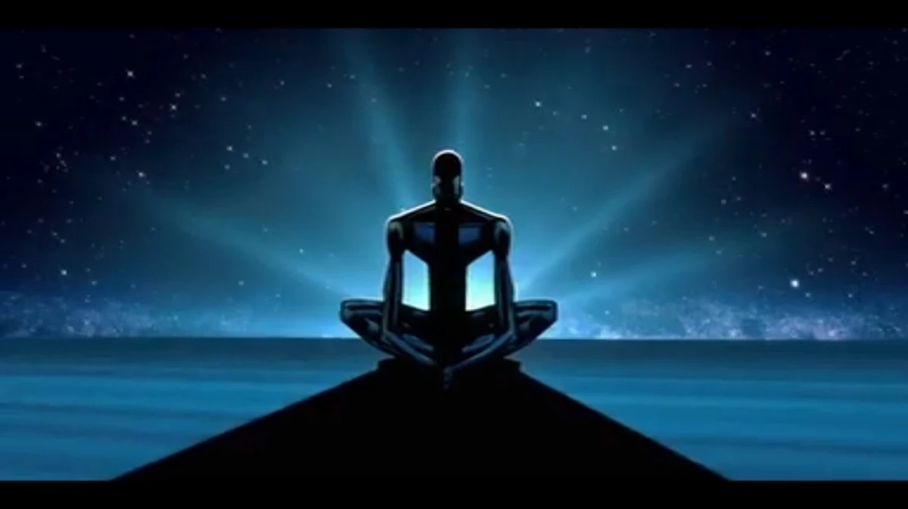
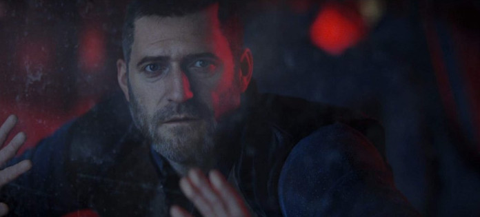
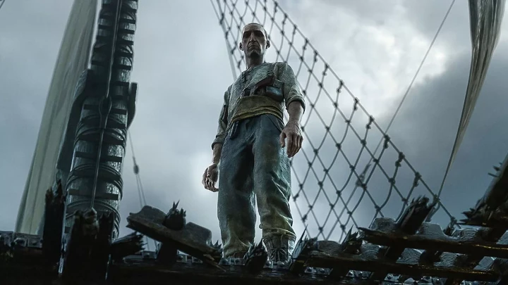

Aqui vai algumas recomendações de episódios marcantes:
O episódio conta a história de um artista, que realizou várias modificações corporais e saiu pelo cosmos em busca de autoconhecimento e sentido de sua existência. Tais odisséias o trazem a obra que será retratada no episódio. Que deixa uma reflexão profunda e filosófica após o seu término.
O segundo episódio da primeira temporada nos leva a uma viagem interestelar, onde, no ponto de partida ocorre um erro de rota, levando a tripulação a uma distância que não era esperada. Esse episódio conta com um belo plot e suas animações em alta resolução nos fazem imergir ainda mais no conto.
A tripulação de um navio de caça a tubarão é atacada por um crustáceo gigante, cujo tamanho e inteligência ameaçam a vida da tripulação e a ilha para a qual deseja uma passagem segura. Uma atmosfera cada vez mais tensa vai se formando ao decorrer do episódio, que é dirigido por David Fincher.
